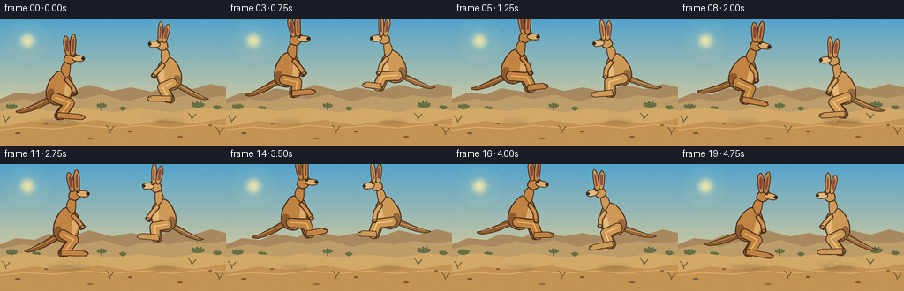
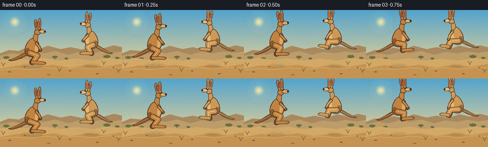

CODING AGENTS AS PIXEL WORLD MODELS
traex/GPT-5.6-Sol · instance_preservation_0008
点击播放 · 原生 RGB 像素
逐轮保存的候选
回放视频、检查图与代码变化。
每份候选均可单独播放。实际图片检查记录在下方工具轨迹中。
候选 01播放与检查图
点击播放 · 原生 RGB 像素

展开代码变化
--- 上一保存版本
+++ 本次保存版本
@@ -0,0 +1,287 @@
+from pathlib import Path
+import math
+import json
+import numpy as np
+from PIL import Image, ImageDraw, ImageFilter
+import artifact_io
+
+ROOT = Path(__file__).resolve().parent
+SPEC = json.loads((ROOT / 'task_spec.json').read_text())
+W, H, N = SPEC['width'], SPEC['height'], SPEC['frames']
+S = 4
+WW, HH = W*S, H*S
+rng = np.random.default_rng(8217)
+
+# Fixed fine-grain texture keeps the hand-painted scene alive without temporal flicker.
+fixed_noise = rng.normal(0, 1.25, (H, W, 1))
+
+
+def scpts(points):
+ return [(int(round(x*S)), int(round(y*S))) for x, y in points]
+
+
+def ellipse(draw, box, fill, outline=None, width=1):
+ b = tuple(int(round(v*S)) for v in box)
+ draw.ellipse(b, fill=fill, outline=outline, width=max(1, int(width*S)))
+
+
+def polygon(draw, pts, fill, outline=None, width=1):
+ p = scpts(pts)
+ draw.polygon(p, fill=fill)
+ if outline:
+ draw.line(p + [p[0]], fill=outline, width=max(1, int(width*S)), joint='curve')
+
+
+def smooth_closed(points, steps=8):
+ """Closed Catmull-Rom spline sampled as a polygon."""
+ p = np.asarray(points, dtype=float)
+ out = []
+ n = len(p)
+ for i in range(n):
+ p0, p1, p2, p3 = p[(i-1)%n], p[i], p[(i+1)%n], p[(i+2)%n]
+ for j in range(steps):
+ t = j / steps
+ q = 0.5*((2*p1) + (-p0+p2)*t + (2*p0-5*p1+4*p2-p3)*t*t + (-p0+3*p1-3*p2+p3)*t*t*t)
+ out.append(tuple(q))
+ return out
+
+
+def interp_pose(p):
+ # One grounded crouch, push-off, airborne tuck, and extended landing per hop.
+ keys = [
+ (0.00, {'knee':(10,17), 'ankle':(-1,31), 'toe':(22,34), 'arm':(17,5), 'pitch':-2}),
+ (0.14, {'knee':(3,18), 'ankle':(-10,31), 'toe':(12,35), 'arm':(18,2), 'pitch':-8}),
+ (0.42, {'knee':(12,12), 'ankle':(17,24), 'toe':(32,22), 'arm':(18,7), 'pitch':-5}),
+ (0.60, {'knee':(13,12), 'ankle':(18,25), 'toe':(32,24), 'arm':(16,8), 'pitch':1}),
+ (0.86, {'knee':(8,17), 'ankle':(1,31), 'toe':(24,35), 'arm':(15,5), 'pitch':5}),
+ (1.00, {'knee':(10,17), 'ankle':(-1,31), 'toe':(22,34), 'arm':(17,5), 'pitch':-2}),
+ ]
+ for (a, A), (b, B) in zip(keys[:-1], keys[1:]):
+ if a <= p <= b:
+ u = (p-a)/(b-a)
+ return {k: (tuple((1-u)*np.array(A[k])+u*np.array(B[k])) if isinstance(A[k], tuple)
+ else (1-u)*A[k]+u*B[k]) for k in A}
+ return keys[-1][1]
+
+
+def render_background(frame_index):
+ arr = np.zeros((HH, WW, 3), dtype=np.uint8)
+ # Clear blue sky grading into warm haze at the horizon.
+ top = np.array([83, 164, 205.], float)
+ bottom = np.array([224, 207, 154.], float)
+ for y in range(HH):
+ yy = y / (HH-1)
+ horizon_mix = min(1., yy/0.78)
+ c = top*(1-horizon_mix) + bottom*horizon_mix
+ arr[y, :, :] = c.astype(np.uint8)
+ im = Image.fromarray(arr, 'RGB')
+ d = ImageDraw.Draw(im)
+
+ # Soft sun glow.
+ glow = Image.new('RGBA', (WW, HH), (0,0,0,0))
+ gd = ImageDraw.Draw(glow)
+ for r, alpha in [(28,8),(19,13),(11,30)]:
+ gd.ellipse(((31-r)*S,(25-r)*S,(31+r)*S,(25+r)*S), fill=(255,240,174,alpha))
+ gd.ellipse((24*S,18*S,38*S,32*S), fill=(255,238,166,220))
+ im = Image.alpha_composite(im.convert('RGBA'), glow.filter(ImageFilter.GaussianBlur(3*S)))
+ d = ImageDraw.Draw(im)
+
+ # Distant atmospheric mesas.
+ polygon(d, [(0,91),(18,84),(39,86),(56,79),(80,83),(100,75),(127,82),(148,78),(172,83),(196,75),(218,80),(239,74),(256,78),(256,106),(0,106)], (169,137,95,255))
+ polygon(d, [(0,96),(25,91),(47,94),(72,87),(92,91),(116,86),(143,94),(166,88),(191,91),(212,87),(236,90),(256,87),(256,111),(0,111)], (189,157,105,255))
+
+ # Small sparse scrub behind the subjects.
+ for x, y, sz in [(13,100,7),(41,102,5),(115,99,6),(139,102,4),(224,98,8),(246,101,5)]:
+ col = (94,105,64,255)
+ d.line(scpts([(x,y+8),(x,y)]), fill=(91,72,47,255), width=S)
+ for ang in (-2.5,-1.7,-1.05,-0.4):
+ ex=x+math.cos(ang)*sz; ey=y+math.sin(ang)*sz*.55
+ d.line(scpts([(x,y+2),(ex,ey)]), fill=col, width=max(S,2*S))
+ ellipse(d,(x-sz*.9,y-sz*.35,x+sz*.9,y+sz*.35),(102,112,68,255))
+
+ # Sandy foreground, with layered ridges and fixed details.
+ polygon(d, [(0,105),(29,101),(62,105),(90,101),(126,106),(158,102),(195,106),(225,101),(256,104),(256,144),(0,144)], (211,169,104,255))
+ polygon(d, [(0,123),(37,116),(69,120),(111,115),(147,121),(184,115),(221,119),(256,113),(256,144),(0,144)], (197,147,82,255))
+ d.line(scpts([(0,126),(28,123),(62,125),(93,121),(128,124),(161,121),(194,124),(230,120),(256,122)]), fill=(226,183,111,255), width=S)
+ # Pebbles and tufts remain exactly fixed across frames.
+ for x,y,rx,ry,c in [(20,130,3,1, (116,92,66,255)),(52,119,2,1,(132,101,65,255)),(102,136,4,1,(151,108,64,255)),(147,128,2,1,(116,85,54,255)),(204,134,3,1,(125,91,57,255)),(238,121,2,1,(139,100,59,255))]:
+ ellipse(d,(x-rx,y-ry,x+rx,y+ry),c)
+ for x,y in [(7,119),(125,130),(218,116),(249,132)]:
+ d.line(scpts([(x,y),(x-2,y-6),(x-5,y-9)]), fill=(101,94,54,255), width=S)
+ d.line(scpts([(x,y-3),(x+4,y-8)]), fill=(101,94,54,255), width=S)
+ return im
+
+
+def tr_factory(cx, cy, direction, scale, pitch):
+ ang = math.radians(pitch)
+ ca, sa = math.cos(ang), math.sin(ang)
+ def tr(pt):
+ x, y = pt
+ # modest body pitch, then mirror by facing direction
+ xr = ca*x - sa*y
+ yr = sa*x + ca*y
+ return (cx + direction*xr*scale, cy + yr*scale)
+ return tr
+
+
+def limb(draw, tr, pts, width, fill, outline, hi=None):
+ P = scpts([tr(q) for q in pts])
+ ow = max(1, int((width+2.2)*S))
+ iw = max(1, int(width*S))
+ draw.line(P, fill=outline, width=ow, joint='curve')
+ for x,y in P:
+ draw.ellipse((x-ow//2,y-ow//2,x+ow//2,y+ow//2), fill=outline)
+ draw.line(P, fill=fill, width=iw, joint='curve')
+ for x,y in P:
+ draw.ellipse((x-iw//2,y-iw//2,x+iw//2,y+iw//2), fill=fill)
+ if hi:
+ # narrow sunlit ridge, subtly offset upward
+ hp=[(x, y-max(1,S//2)) for x,y in P]
+ draw.line(hp, fill=hi, width=max(1,int(width*.18*S)), joint='curve')
+
+
+def kangaroo_layer(cx, cy, direction, scale, p, palette, seed):
+ pose = interp_pose(p)
+ tr = tr_factory(cx, cy, direction, scale, pose['pitch'])
+ layer = Image.new('RGBA',(WW,HH),(0,0,0,0))
+ d = ImageDraw.Draw(layer)
+ outline=palette['outline']; dark=palette['dark']; fur=palette['fur']; light=palette['light']; pale=palette['pale']
+
+ # Long balancing tail behind the body, gently counter-rotating through the leap.
+ tail_lift = -2.0*math.sin(math.pi*p)
+ tail = [(-10,8),(-20,11+tail_lift),(-33,17+tail_lift),(-48,23+tail_lift),(-56,25+tail_lift),(-48,27+tail_lift),(-31,23+tail_lift),(-17,17+tail_lift),(-7,14)]
+ TP=[tr(q) for q in smooth_closed(tail,5)]
+ polygon(d,TP,dark,outline,1.15)
+ d.line(scpts([tr((-11,10)),tr((-30,18+tail_lift)),tr((-49,24+tail_lift))]), fill=light, width=max(1,int(1.0*S*scale)))
+
+ # Rear leg and foot add depth without creating a third animal.
+ kx,ky=pose['knee']; ax,ay=pose['ankle']; tx,ty=pose['toe']
+ limb(d,tr,[(-8,11),(kx-3,ky+1),(ax-3,ay+1)],8.2,dark,outline,fur)
+ foot_far=[(ax-4,ay-2),(tx-2,ty-2),(tx+3,ty),(tx+1,ty+4),(ax-5,ay+4)]
+ polygon(d,[tr(q) for q in foot_far],dark,outline,1.0)
+
+ # Far forearm.
+ handx,handy=pose['arm']
+ limb(d,tr,[(5,-10),(12,-3),(handx-2,handy+1)],3.5,dark,outline,None)
+ ellipse(d,(*np.array(tr((handx-2,handy+1)))-np.array([2.2,1.8])*scale,*np.array(tr((handx-2,handy+1)))+np.array([2.2,1.8])*scale),dark)
+
+ # Main torso and powerful rump.
+ torso=[(3,-22),(10,-17),(14,-8),(14,2),(9,13),(-2,19),(-12,17),(-18,9),(-17,-3),(-11,-14),(-4,-21)]
+ polygon(d,[tr(q) for q in smooth_closed(torso,8)],fur,outline,1.45)
+ # Belly and chest lighting.
+ belly=[(8,-13),(12,-7),(11,4),(6,12),(-1,16),(3,8),(5,-2)]
+ polygon(d,[tr(q) for q in smooth_closed(belly,5)],pale,None)
+ # Rump shade creates volume.
+ shade=[(-16,0),(-17,10),(-10,17),(-3,18),(-8,10),(-9,0)]
+ polygon(d,[tr(q) for q in smooth_closed(shade,4)],dark,None)
+
+ # Near thigh, shin, ankle, and characteristic long foot.
+ limb(d,tr,[(-7,10),(kx,ky),(ax,ay)],9.6,fur,outline,light)
+ foot=[(ax-4,ay-3),(tx-1,ty-3),(tx+5,ty-1),(tx+6,ty+2),(tx+2,ty+4),(ax-5,ay+4)]
+ polygon(d,[tr(q) for q in foot],fur,outline,1.15)
+ d.line(scpts([tr((tx+1,ty-1)),tr((tx+5,ty))]),fill=palette['claw'],width=max(1,int(S*scale)))
+
+ # Neck, head, muzzle.
+ neck=[(1,-23),(5,-32),(12,-33),(11,-19),(7,-14)]
+ polygon(d,[tr(q) for q in smooth_closed(neck,5)],fur,outline,1.2)
+ head=[(5,-34),(7,-41),(13,-45),(19,-43),(21,-38),(18,-33),(12,-30)]
+ polygon(d,[tr(q) for q in smooth_closed(head,6)],fur,outline,1.25)
+ muzzle=[(17,-41),(26,-40),(30,-37),(27,-33),(18,-34),(15,-37)]
+ polygon(d,[tr(q) for q in smooth_closed(muzzle,5)],pale,outline,1.0)
+ # Black nose at the forward tip.
+ nose=tr((28,-36.5))
+ ellipse(d,(nose[0]-2.1*scale,nose[1]-1.8*scale,nose[0]+2.1*scale,nose[1]+1.8*scale),palette['nose'])
+
+ # Tall ears: broad enough to read at video resolution, each with warm inner fur.
+ ear_back=[(8,-42),(5,-58),(8,-65),(12,-58),(13,-43)]
+ ear_front=[(13,-43),(14,-61),(18,-67),(20,-59),(18,-42)]
+ polygon(d,[tr(q) for q in smooth_closed(ear_back,5)],fur,outline,1.05)
+ polygon(d,[tr(q) for q in smooth_closed(ear_front,5)],fur,outline,1.05)
+ polygon(d,[tr(q) for q in [(8,-46),(7,-58),(9,-61),(11,-57),(11,-46)]],palette['inner'],None)
+ polygon(d,[tr(q) for q in [(15,-46),(16,-59),(18,-62),(18,-57),(17,-45)]],palette['inner'],None)
+
+ # Near forearm and small paw.
+ limb(d,tr,[(8,-11),(14,-3),(handx,handy)],3.9,fur,outline,light)
+ paw=tr((handx,handy))
+ ellipse(d,(paw[0]-2.4*scale,paw[1]-2*scale,paw[0]+2.5*scale,paw[1]+2*scale),fur,outline,0.8)
+ # Tiny claws/fingers.
+ for offs in (-0.7,0.7):
+ a=tr((handx+1,handy+offs)); b=tr((handx+4,handy+offs+.2))
+ d.line(scpts([a,b]),fill=palette['claw'],width=max(1,int(.55*S*scale)))
+
+ # Alert eye and catchlight.
+ eye=tr((17,-40))
+ ellipse(d,(eye[0]-1.55*scale,eye[1]-1.45*scale,eye[0]+1.55*scale,eye[1]+1.45*scale),palette['eye'],outline,.45)
+ ellipse(d,(eye[0]-.3*scale,eye[1]-.75*scale,eye[0]+.4*scale,eye[1]-.05*scale),(246,239,205,255))
+
+ # Local fur stipple clipped to the animal alpha, stable by identity and pose-independent local locations.
+ speck = Image.new('RGBA',(WW,HH),(0,0,0,0)); sd=ImageDraw.Draw(speck)
+ rr=np.random.default_rng(seed)
+ for _ in range(34):
+ lx=rr.uniform(-14,12); ly=rr.uniform(-18,16)
+ q=tr((lx,ly)); r=rr.uniform(.18,.42)*S*scale
+ sd.ellipse((q[0]*S-r,q[1]*S-r,q[0]*S+r,q[1]*S+r), fill=palette['speck'])
+ # Correct coordinate handling for speck points (tr is in logical pixels).
+ alpha=np.asarray(layer.getchannel('A'))
+ sp=np.asarray(speck).copy()
+ sp[...,3]=np.minimum(sp[...,3],alpha)
+ layer=Image.alpha_composite(layer,Image.fromarray(sp,'RGBA'))
+ return layer
+
+
+def add_shadow_and_dust(base, cx, direction, scale, p, jump, frame_idx, identity):
+ sh=Image.new('RGBA',(WW,HH),(0,0,0,0)); d=ImageDraw.Draw(sh)
+ # Shadow contracts and fades as the kangaroo rises.
+ sw=(25-9*jump)*scale; sy=117.5
+ sx=cx-direction*2
+ d.ellipse(((sx-sw)*S,(sy-2.2*scale)*S,(sx+sw)*S,(sy+2.2*scale)*S), fill=(72,57,42,int(75-29*jump)))
+ sh=sh.filter(ImageFilter.GaussianBlur(2.2*S))
+ base=Image.alpha_composite(base,sh)
+ # Dust is strongest for the first two frames after each landing.
+ phase_frame=(frame_idx + identity*2) % 10
+ if phase_frame in (0,1,2):
+ dust=Image.new('RGBA',(WW,HH),(0,0,0,0)); dd=ImageDraw.Draw(dust)
+ age=phase_frame; rr=np.random.default_rng(1000+identity*100+(frame_idx//10))
+ for j in range(10):
+ dx=rr.uniform(-18,18)*(0.55+age*.25)
+ dy=rr.uniform(-2,4)-age*2.6
+ rad=rr.uniform(1.2,3.5)*(1+age*.24)
+ x=cx+direction*10+dx; y=116+dy
+ dd.ellipse(((x-rad)*S,(y-rad*.55)*S,(x+rad)*S,(y+rad*.55)*S), fill=(226,188,124,max(0,62-age*17)))
+ base=Image.alpha_composite(base,dust.filter(ImageFilter.GaussianBlur(1.2*S)))
+ return base
+
+
+def make_frame(i):
+ base=render_background(i)
+ # Different phase offsets, color values, and scale make two persistent individuals.
+ configs=[
+ dict(x=69+i*.72, direction=1, scale=.93, offset=0, identity=0,
+ palette={'outline':(70,45,27,255),'dark':(143,91,45,255),'fur':(194,132,67,255),'light':(229,178,99,255),'pale':(222,171,105,255),'inner':(135,72,59,255),'nose':(49,39,31,255),'eye':(30,25,20,255),'claw':(58,43,29,255),'speck':(105,66,36,38)}),
+ dict(x=190-i*.58, direction=-1, scale=.88, offset=2, identity=1,
+ palette={'outline':(77,52,32,255),'dark':(150,105,60,255),'fur':(207,154,87,255),'light':(240,196,122,255),'pale':(230,185,120,255),'inner':(148,82,67,255),'nose':(53,42,33,255),'eye':(32,26,19,255),'claw':(61,45,31,255),'speck':(118,78,43,34)})]
+ states=[]
+ for c in configs:
+ p=((i+c['offset'])%10)/10.0
+ jump=math.sin(math.pi*p)
+ # A smooth, clearly airborne parabolic-looking leap; slight contact compression.
+ cy=79.7-24.0*(jump**0.78)
+ if jump < .18:
+ cy += (0.18-jump)*2.5
+ states.append((c,p,jump,cy))
+ base=add_shadow_and_dust(base,c['x'],c['direction'],c['scale'],p,jump,i,c['identity'])
+ # Draw rear/right individual first only where tails approach; bodies never overlap.
+ for c,p,jump,cy in states:
+ animal=kangaroo_layer(c['x'],cy,c['direction'],c['scale'],p,c['palette'],410+c['identity'])
+ base=Image.alpha_composite(base,animal)
+ # Downsample high-resolution antialiasing and apply one stable, subtle film grain.
+ img=base.convert('RGB').resize((W,H),Image.Resampling.LANCZOS)
+ a=np.asarray(img).astype(np.float32)
+ a=np.clip(a+fixed_noise,0,255).astype(np.uint8)
+ return a
+
+
+frames=np.stack([make_frame(i) for i in range(N)],axis=0).astype(np.uint8)
+assert frames.shape==(N,H,W,3)
+artifact_io.save(frames,ROOT)
+print(f'Saved {N} RGB frames at {W}x{H}; mean={frames.mean():.2f}, temporal_delta={np.abs(np.diff(frames.astype(np.int16),axis=0)).mean():.2f}')
候选 02播放与检查图
点击播放 · 原生 RGB 像素


展开代码变化
--- 上一保存版本
+++ 本次保存版本
@@ -265,7 +265,7 @@
p=((i+c['offset'])%10)/10.0
jump=math.sin(math.pi*p)
# A smooth, clearly airborne parabolic-looking leap; slight contact compression.
- cy=79.7-24.0*(jump**0.78)
+ cy=85.0-18.0*(jump**0.78)
if jump < .18:
cy += (0.18-jump)*2.5
states.append((c,p,jump,cy))
候选 03播放与检查图
可观测工具轨迹
实际执行的命令与返回图片。
命令 1exit 0
/bin/bash -lc "cat prompt.txt && printf '\\n--- GENERATION_RULES.md ---\\n' && cat GENERATION_RULES.md"
命令 2exit 0
/bin/bash -lc "printf '%s\\n' '--- task_spec.json ---' && cat task_spec.json && printf '%s\\n' '--- files ---' && find . -maxdepth 2 -type f -printf '%p\\n' | sort"
命令 3exit 0
/bin/bash -lc "command -v ffmpeg || true; command -v python3 || true; python3 - <<'PY' mods=['numpy','PIL','cv2','imageio','cairo'] for m in mods: try: x=__import__(m) print(m,'OK',getattr(x,'__version__','')) except Exception as e: print(m,'NO',e) PY"
命令 4exit 0
/bin/bash -lc "sed -n '1,240p' artifact_io.py"
命令 5exit 2
/bin/bash -lc "cat > generate.py <<'PY'
from pathlib import Path
import math
import json
import numpy as np
from PIL import Image, ImageDraw, ImageFilter
import artifact_io
ROOT = Path(__file__).resolve().parent
SPEC = json.loads((ROOT / 'task_spec.json').read_text())
W, H, N = SPEC['width'], SPEC['height'], SPEC['frames']
S = 4
WW, HH = W*S, H*S
rng = np.random.default_rng(8217)
# Fixed fine-grain texture keeps the hand-painted scene alive without temporal flicker.
fixed_noise = rng.normal(0, 1.25, (H, W, 1))
def scpts(points):
return [(int(round(x*S)), int(round(y*S))) for x, y in points]
def ellipse(draw, box, fill, outline=None, width=1):
b = tuple(int(round(v*S)) for v in box)
draw.ellipse(b, fill=fill, outline=outline, width=max(1, int(width*S)))
def polygon(draw, pts, fill, outline=None, width=1):
p = scpts(pts)
draw.polygon(p, fill=fill)
if outline:
draw.line(p + [p[0]], fill=outline, width=max(1, int(width*S)), joint='curve')
def smooth_closed(points, steps=8):
\"\"\"Closed Catmull-Rom spline sampled as a polygon.\"\"\"
p = np.asarray(points, dtype=float)
out = []
n = len(p)
for i in range(n):
p0, p1, p2, p3 = p[(i-1)%n], p[i], p[(i+1)%n], p[(i+2)%n]
for j in range(steps):
t = j / steps
q = 0.5*((2*p1) + (-p0+p2)*t + (2*p0-5*p1+4*p2-p3)*t*t + (-p0+3*p1-3*p2+p3)*t*t*t)
out.append(tuple(q))
return out
def interp_pose(p):
# One grounded crouch, push-off, airborne tuck, and extended landing per hop.
keys = [
(0.00, {'knee':(10,17), 'ankle':(-1,31), 'toe':(22,34), 'arm':(17,5), 'pitch':-2}),
(0.14, {'knee':(3,18), 'ankle':(-10,31), 'toe':(12,35), 'arm':(18,2), 'pitch':-8}),
(0.42, {'knee':(12,12), 'ankle':(17,24), 'toe':(32,22), 'arm':(18,7), 'pitch':-5}),
(0.60, {'knee':(13,12), 'ankle':(18,25), 'toe':(32,24), 'arm':(16,8), 'pitch':1}),
(0.86, {'knee':(8,17), 'ankle':(1,31), 'toe':(24,35), 'arm':(15,5), 'pitch':5}),
(1.00, {'knee':(10,17), 'ankle':(-1,31), 'toe':(22,34), 'arm':(17,5), 'pitch':-2}),
]
for (a, A), (b, B) in zip(keys[:-1], keys[1:]):
if a <= p <= b:
u = (p-a)/(b-a)
return {k: (tuple((1-u)*np.array(A[k])+u*np.array(B[k])) if isinstance(A[k], tuple)
else (1-u)*A[k]+u*B[k]) for k in A}
return keys[-1][1]
def render_background(frame_index):
arr = np.zeros((HH, WW, 3), dtype=np.uint8)
# Clear blue sky grading into warm haze at the horizon.
top = np.array([83, 164, 205.], float)
bottom = np.array([224, 207, 154.], float)
for y in range(HH):
yy = y / (HH-1)
horizon_mix = min(1., yy/0.78)
c = top*(1-horizon_mix) + bottom*horizon_mix
arr[y, :, :] = c.astype(np.uint8)
im = Image.fromarray(arr, 'RGB')
d = ImageDraw.Draw(im)
# Soft sun glow.
glow = Image.new('RGBA', (WW, HH), (0,0,0,0))
gd = ImageDraw.Draw(glow)
for r, alpha in [(28,8),(19,13),(11,30)]:
gd.ellipse(((31-r)*S,(25-r)*S,(31+r)*S,(25+r)*S), fill=(255,240,174,alpha))
gd.ellipse((24*S,18*S,38*S,32*S), fill=(255,238,166,220))
im = Image.alpha_composite(im.convert('RGBA'), glow.filter(ImageFilter.GaussianBlur(3*S)))
d = ImageDraw.Draw(im)
# Distant atmospheric mesas.
polygon(d, [(0,91),(18,84),(39,86),(56,79),(80,83),(100,75),(127,82),(148,78),(172,83),(196,75),(218,80),(239,74),(256,78),(256,106),(0,106)], (169,137,95,255))
polygon(d, [(0,96),(25,91),(47,94),(72,87),(92,91),(116,86),(143,94),(166,88),(191,91),(212,87),(236,90),(256,87),(256,111),(0,111)], (189,157,105,255))
# Small sparse scrub behind the subjects.
for x, y, sz in [(13,100,7),(41,102,5),(115,99,6),(139,102,4),(224,98,8),(246,101,5)]:
col = (94,105,64,255)
d.line(scpts([(x,y+8),(x,y)]), fill=(91,72,47,255), width=S)
for ang in (-2.5,-1.7,-1.05,-0.4):
ex=x+math.cos(ang)*sz; ey=y+math.sin(ang)*sz*.55
d.line(scpts([(x,y+2),(ex,ey)]), fill=col, width=max(S,2*S))
ellipse(d,(x-sz*.9,y-sz*.35,x+sz*.9,y+sz*.35),(102,112,68,255))
# Sandy foreground, with layered ridges and fixed details.
polygon(d, [(0,105),(29,101),(62,105),(90,101),(126,106),(158,102),(195,106),(225,101),(256,104),(256,144),(0,144)], (211,169,104,255))
polygon(d, [(0,123),(37,116),(69,120),(111,115),(147,121),(184,115),(221,119),(256,113),(256,144),(0,144)], (197,147,82,255))
d.line(scpts([(0,126),(28,123),(62,125),(93,121),(128,124),(161,121),(194,124),(230,120),(256,122)]), fill=(226,183,111,255), width=S)
# Pebbles and tufts remain exactly fixed across frames.
for x,y,rx,ry,c in [(20,130,3,1, (116,92,66,255)),(52,119,2,1,(132,101,65,255)),(102,136,4,1,(151,108,64,255)),(147,128,2,1,(116,85,54,255)),(204,134,3,1,(125,91,57,255)),(238,121,2,1,(139,100,59,255))]:
ellipse(d,(x-rx,y-ry,x+rx,y+ry),c)
for x,y in [(7,119),(125,130),(218,116),(249,132)]:
d.line(scpts([(x,y),(x-2,y-6),(x-5,y-9)]), fill=(101,94,54,255), width=S)
d.line(scpts([(x,y-3),(x+4,y-8)]), fill=(101,94,54,255), width=S)
return im
def tr_factory(cx, cy, direction, scale, pitch):
ang = math.radians(pitch)
ca, sa = math.cos(ang), math.sin(ang)
def tr(pt):
x, y = pt
# modest body pitch, then mirror by facing direction
xr = ca*x - sa*y
yr = sa*x + ca*y
return (cx + direction*xr*scale, cy + yr*scale)
return tr
def limb(draw, tr, pts, width, fill, outline, hi=None):
P = scpts([tr(q) for q in pts])
ow = max(1, int((width+2.2)*S))
iw = max(1, int(width*S))
draw.line(P, fill=outline, width=ow, joint='curve')
for x,y in P:
draw.ellipse((x-ow//2,y-ow//2,x+ow//2,y+ow//2), fill=outline)
draw.line(P, fill=fill, width=iw, joint='curve')
for x,y in P:
draw.ellipse((x-iw//2,y-iw//2,x+iw//2,y+iw//2), fill=fill)
if hi:
# narrow sunlit ridge, subtly offset upward
hp=[(x, y-max(1,S//2)) for x,y in P]
draw.line(hp, fill=hi, width=max(1,int(width*.18*S)), joint='curve')
def kangaroo_layer(cx, cy, direction, scale, p, palette, seed):
pose = interp_pose(p)
tr = tr_factory(cx, cy, direction, scale, pose['pitch'])
layer = Image.new('RGBA',(WW,HH),(0,0,0,0))
d = ImageDraw.Draw(layer)
outline=palette['outline']; dark=palette['dark']; fur=palette['fur']; light=palette['light']; pale=palette['pale']
# Long balancing tail behind the body, gently counter-rotating through the leap.
tail_lift = -2.0*math.sin(math.pi*p)
tail = [(-10,8),(-20,11+tail_lift),(-33,17+tail_lift),(-48,23+tail_lift),(-56,25+tail_lift),(-48,27+tail_lift),(-31,23+tail_lift),(-17,17+tail_lift),(-7,14)]
TP=[tr(q) for q in smooth_closed(tail,5)]
polygon(d,TP,dark,outline,1.15)
d.line(scpts([tr((-11,10)),tr((-30,18+tail_lift)),tr((-49,24+tail_lift))]), fill=light, width=max(1,int(1.0*S*scale)))
# Rear leg and foot add depth without creating a third animal.
kx,ky=pose['knee']; ax,ay=pose['ankle']; tx,ty=pose['toe']
limb(d,tr,[(-8,11),(kx-3,ky+1),(ax-3,ay+1)],8.2,dark,outline,fur)
foot_far=[(ax-4,ay-2),(tx-2,ty-2),(tx+3,ty),(tx+1,ty+4),(ax-5,ay+4)]
polygon(d,[tr(q) for q in foot_far],dark,outline,1.0)
# Far forearm.
handx,handy=pose['arm']
limb(d,tr,[(5,-10),(12,-3),(handx-2,handy+1)],3.5,dark,outline,None)
ellipse(d,(*np.array(tr((handx-2,handy+1)))-np.array([2.2,1.8])*scale,*np.array(tr((handx-2,handy+1)))+np.array([2.2,1.8])*scale),dark)
# Main torso and powerful rump.
torso=[(3,-22),(10,-17),(14,-8),(14,2),(9,13),(-2,19),(-12,17),(-18,9),(-17,-3),(-11,-14),(-4,-21)]
polygon(d,[tr(q) for q in smooth_closed(torso,8)],fur,outline,1.45)
# Belly and chest lighting.
belly=[(8,-13),(12,-7),(11,4),(6,12),(-1,16),(3,8),(5,-2)]
polygon(d,[tr(q) for q in smooth_closed(belly,5)],pale,None)
# Rump shade creates volume.
shade=[(-16,0),(-17,10),(-10,17),(-3,18),(-8,10),(-9,0)]
polygon(d,[tr(q) for q in smooth_closed(shade,4)],dark,None)
# Near thigh, shin, ankle, and characteristic long foot.
limb(d,tr,[(-7,10),(kx,ky),(ax,ay)],9.6,fur,outline,light)
foot=[(ax-4,ay-3),(tx-1,ty-3),(tx+5,ty-1),(tx+6,ty+2),(tx+2,ty+4),(ax-5,ay+4)]
polygon(d,[tr(q) for q in foot],fur,outline,1.15)
d.line(scpts([tr((tx+1,ty-1)),tr((tx+5,ty))]),fill=palette['claw'],width=max(1,int(S*scale)))
# Neck, head, muzzle.
neck=[(1,-23),(5,-32),(12,-33),(11,-19),(7,-14)]
polygon(d,[tr(q) for q in smooth_closed(neck,5)],fur,outline,1.2)
head=[(5,-34),(7,-41),(13,-45),(19,-43),(21,-38),(18,-33),(12,-30)]
polygon(d,[tr(q) for q in smooth_closed(head,6)],fur,outline,1.25)
muzzle=[(17,-41),(26,-40),(30,-37),(27,-33),(18,-34),(15,-37)]
polygon(d,[tr(q) for q in smooth_closed(muzzle,5)],pale,outline,1.0)
# Black nose at the forward tip.
nose=tr((28,-36.5))
ellipse(d,(nose[0]-2.1*scale,nose[1]-1.8*scale,nose[0]+2.1*scale,nose[1]+1.8*scale),palette['nose'])
# Tall ears: broad enough to read at video resolution, each with warm inner fur.
ear_back=[(8,-42),(5,-58),(8,-65),(12,-58),(13,-43)]
ear_front=[(13,-43),(14,-61),(18,-67),(20,-59),(18,-42)]
polygon(d,[tr(q) for q in smooth_closed(ear_back,5)],fur,outline,1.05)
polygon(d,[tr(q) for q in smooth_closed(ear_front,5)],fur,outline,1.05)
polygon(d,[tr(q) for q in [(8,-46),(7,-58),(9,-61),(11,-57),(11,-46)]],palette['inner'],None)
polygon(d,[tr(q) for q in [(15,-46),(16,-59),(18,-62),(18,-57),(17,-45)]],palette['inner'],None)
# Near forearm and small paw.
limb(d,tr,[(8,-11),(14,-3),(handx,handy)],3.9,fur,outline,light)
paw=tr((handx,handy))
ellipse(d,(paw[0]-2.4*scale,paw[1]-2*scale,paw[0]+2.5*scale,paw[1]+2*scale),fur,outline,0.8)
# Tiny claws/fingers.
for offs in (-0.7,0.7):
a=tr((handx+1,handy+offs)); b=tr((handx+4,handy+offs+.2))
d.line(scpts([a,b]),fill=palette['claw'],width=max(1,int(.55*S*scale)))
# Alert eye and catchlight.
eye=tr((17,-40))
ellipse(d,(eye[0]-1.55*scale,eye[1]-1.45*scale,eye[0]+1.55*scale,eye[1]+1.45*scale),palette['eye'],outline,.45)
ellipse(d,(eye[0]-.3*scale,eye[1]-.75*scale,eye[0]+.4*scale,eye[1]-.05*scale),(246,239,205,255))
# Local fur stipple clipped to the animal alpha, stable by identity and pose-independent local locations.
speck = Image.new('RGBA',(WW,HH),(0,0,0,0)); sd=ImageDraw.Draw(speck)
rr=np.random.default_rng(seed)
for _ in range(34):
lx=rr.uniform(-14,12); ly=rr.uniform(-18,16)
q=tr((lx,ly)); r=rr.uniform(.18,.42)*S*scale
sd.ellipse((q[0]*S-r,q[1]*S-r,q[0]*S+r,q[1]*S+r), fill=palette['speck'])
# Correct coordinate handling for speck points (tr is in logical pixels).
alpha=np.asarray(layer.getchannel('A'))
sp=np.asarray(speck)
sp[...,3]=np.minimum(sp[...,3],alpha)
layer=Image.alpha_composite(layer,Image.fromarray(sp,'RGBA'))
return layer
def add_shadow_and_dust(base, cx, direction, scale, p, jump, frame_idx, identity):
sh=Image.new('RGBA',(WW,HH),(0,0,0,0)); d=ImageDraw.Draw(sh)
# Shadow contracts and fades as the kangaroo rises.
sw=(25-9*jump)*scale; sy=117.5
sx=cx-direction*2
d.ellipse(((sx-sw)*S,(sy-2.2*scale)*S,(sx+sw)*S,(sy+2.2*scale)*S), fill=(72,57,42,int(75-29*jump)))
sh=sh.filter(ImageFilter.GaussianBlur(2.2*S))
base=Image.alpha_composite(base,sh)
# Dust is strongest for the first two frames after each landing.
phase_frame=(frame_idx + identity*2) % 10
if phase_frame in (0,1,2):
dust=Image.new('RGBA',(WW,HH),(0,0,0,0)); dd=ImageDraw.Draw(dust)
age=phase_frame; rr=np.random.default_rng(1000+identity*100+(frame_idx//10))
for j in range(10):
dx=rr.uniform(-18,18)*(0.55+age*.25)
dy=rr.uniform(-2,4)-age*2.6
rad=rr.uniform(1.2,3.5)*(1+age*.24)
x=cx+direction*10+dx; y=116+dy
dd.ellipse(((x-rad)*S,(y-rad*.55)*S,(x+rad)*S,(y+rad*.55)*S), fill=(226,188,124,max(0,62-age*17)))
base=Image.alpha_composite(base,dust.filter(ImageFilter.GaussianBlur(1.2*S)))
return base
def make_frame(i):
base=render_background(i)
# Different phase offsets, color values, and scale make two persistent individuals.
configs=[
dict(x=69+i*.72, direction=1, scale=.93, offset=0, identity=0,
palette={'outline':(70,45,27,255),'dark':(143,91,45,255),'fur':(194,132,67,255),'light':(229,178,99,255),'pale':(222,171,105,255),'inner':(135,72,59,255),'nose':(49,39,31,255),'eye':(30,25,20,255),'claw':(58,43,29,255),'speck':(105,66,36,38)}),
dict(x=190-i*.58, direction=-1, scale=.88, offset=2, identity=1,
palette={'outline':(77,52,32,255),'dark':(150,105,60,255),'fur':(207,154,87,255),'light':(240,196,122,255),'pale':(230,185,120,255),'inner':(148,82,67,255),'nose':(53,42,33,255),'eye':(32,26,19,255),'claw':(61,45,31,255),'speck':(118,78,43,34)})]
states=[]
for c in configs:
p=((i+c['offset'])%10)/10.0
jump=math.sin(math.pi*p)
# A smooth, clearly airborne parabolic-looking leap; slight contact compression.
cy=79.7-24.0*(jump**0.78)
if jump < .18:
cy += (0.18-jump)*2.5
states.append((c,p,jump,cy))
base=add_shadow_and_dust(base,c['x'],c['direction'],c['scale'],p,jump,i,c['identity'])
# Draw rear/right individual first only where tails approach; bodies never overlap.
for c,p,jump,cy in states:
animal=kangaroo_layer(c['x'],cy,c['direction'],c['scale'],p,c['palette'],410+c['identity'])
base=Image.alpha_composite(base,animal)
# Downsample high-resolution antialiasing and apply one stable, subtle film grain.
img=base.convert('RGB').resize((W,H),Image.Resampling.LANCZOS)
a=np.asarray(img).astype(np.float32)
a=np.clip(a+fixed_noise,0,255).astype(np.uint8)
return a
frames=np.stack([make_frame(i) for i in range(N)],axis=0).astype(np.uint8)
assert frames.shape==(N,H,W,3)
artifact_io.save(frames,ROOT)
print(f'Saved {N} RGB frames at {W}x{H}; mean={frames.mean():.2f}, temporal_delta={np.abs(np.diff(frames.astype(np.int16),axis=0)).mean():.2f}')
PY
python3 generate.py
ls -lh pixels.npz inspection.png transition_check.png index.html frames/00.png frames/19.png"命令 6exit 0
/bin/bash -lc "python3 - <<'PY' p='generate.py' s=open(p).read().replace(\"sp=np.asarray(speck)\\n sp[...,3]\", \"sp=np.asarray(speck).copy()\\n sp[...,3]\") open(p,'w').write(s) PY python3 generate.py ls -lh pixels.npz inspection.png transition_check.png index.html frames/00.png frames/19.png"
命令 7exit 0
/bin/bash -lc "python3 - <<'PY'
p='generate.py'
s=open(p).read()
s=s.replace(\"cy=79.7-24.0*(jump**0.78)\", \"cy=85.0-18.0*(jump**0.78)\")
open(p,'w').write(s)
PY
python3 generate.py
python3 - <<'PY'
from pathlib import Path
import numpy as np
from PIL import Image
z=np.load('pixels.npz')['pixels']
assert z.shape==(144,256,20) and z.dtype==np.uint32
frames=np.stack([np.asarray(Image.open(f'frames/{i:02d}.png').convert('RGB')) for i in range(20)])
assert frames.shape==(20,144,256,3) and frames.dtype==np.uint8
# Confirm exact packing and temporal continuity.
p=((frames[...,0].astype(np.uint32)<<16)|(frames[...,1].astype(np.uint32)<<8)|frames[...,2])
assert np.array_equal(p.transpose(1,2,0),z)
d=np.abs(np.diff(frames.astype(np.int16),axis=0))
print('validation: shape',frames.shape,'dtype',frames.dtype,'fps=4 duration=5s')
print('range',frames.min(),frames.max(),'mean temporal MAE',round(float(d.mean()),3),'max frame MAE',round(float(d.mean((1,2,3)).max()),3))
print('artifacts', {x:Path(x).stat().st_size for x in ['pixels.npz','index.html','inspection.png','transition_check.png']})
PY
sha256sum generate.py pixels.npz | head"保存候选 3 份；完成命令 7 次；可验证图片返回 0 张。原始 API 响应与完整日志保留在本地。